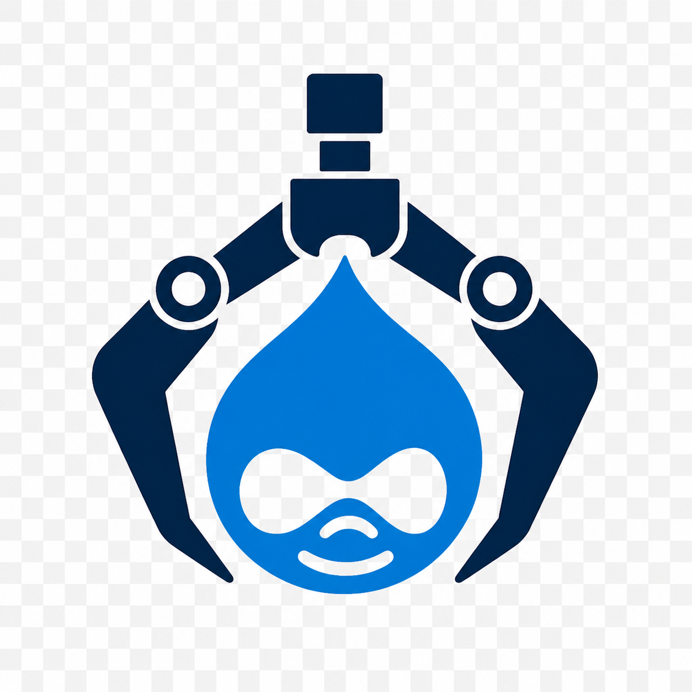
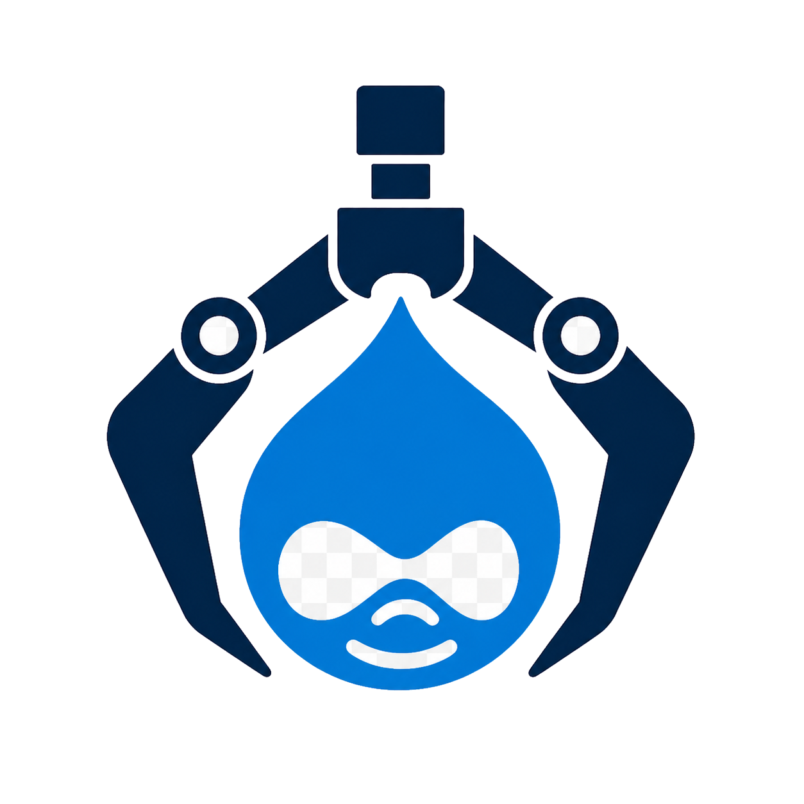

DrupalClawDrupalClaw is your Drupal coworker: an AI coding agent, a Docker-managed PHP stack, and 15 Drupal-specific skills, packaged into a single self-hosted container. Talk to it, and it builds.
DrupalClaw is built on PiClaw — an open-source AI workspace — and ships with the entire PHP toolchain Drupal developers actually use.
Most AI coding tools speak generic PHP. DrupalClaw speaks Drupal: drush, hook conventions, module scaffolds, watchdog logs, cache rebuilds, contrib install patterns.
Tell the agent what you want — "scaffold a custom block module", "diagnose this 500 error", "import the staging DB" — and it picks the right skill, runs the right command, and shows you the result. No prompt engineering required.
Not a generic chatbot taped onto a container — every capability targets a real Drupal task.
Natural language goes in, drush and composer commands come out. The agent picks the skill, you review the result. Switch to Expert mode for terse output, or keep Learning mode on to see the equivalent shell commands after every operation.
Common commands as one-click buttons — start stack, cache rebuild, analyze, export DB. JSON-configurable.
Sibling containers via socket. nginx + PHP-FPM + your DB of choice. Same shape as production.
Init, serve, modules, analysis, fixes, database I/O, logs, debugging, performance, automated plans — the full Drupal day.
PHPStan and PHPCS/PHPCBF wired in. Find issues with one button, fix coding-standard violations with the next.
Your code, your machine, your control. GPL-2.0, built on PiClaw, extensible top to bottom.
Flows and Plans turn the agent from a responder into a collaborator — automating recurring operations and making strategic intent executable and verifiable.
Chain skills, agent messages, and MCP calls into a multi-step pipeline. Trigger manually or on a cron schedule. Run history is logged and can be sent to chat for analysis or turned into a Plan.
The agent proposes a plan from a conversation or Flow output. Save it, execute step by step, watch checkboxes tick in real time, then validate the result. Stored as plain Markdown — readable and editable anywhere.
Each skill is a focused, pre-configured command the agent invokes on your behalf — no glue code required.
Each skill has a dedicated documentation page with usage, parameters, and examples. → Full Skills Reference on the Wiki
Browse and install skills from any compatible catalog — directly from the workspace, without leaving the browser.
Point DrupalClaw at any skill catalog via URL and browse its contents without leaving the workspace. The Marketplace is catalog-agnostic — it works with any source that follows the open format, whether public or private.
Installed skills integrate immediately: they appear in the Skills panel, in chat autocomplete, and can be wired into Flows alongside built-in ones.
A panel of one-click shortcuts beside the chat — for the things you do twenty times a day.
Buttons map 1-to-1 to skills. Click Cache Rebuild and the agent runs drush cr — same result as asking in chat, two clicks faster.
DrupalClaw runs in a single container that orchestrates everything else through the Docker socket.
The AI agent and Dev Panel. PHP 8.3, Composer, Drush, full Drupal toolchain.
→Sibling containers managed from inside. No nested Docker, no surprises.
→nginx + PHP-FPM, volume-mounted code, production-like behavior in dev.
→MariaDB or PostgreSQL as a sibling, or SQLite if you want zero-deps.
Compose-up, open the browser, talk to the agent. The whole bring-up is under two minutes on a warm cache.

Self-hosted. Agent-first. Open source. Built for the Drupal community.